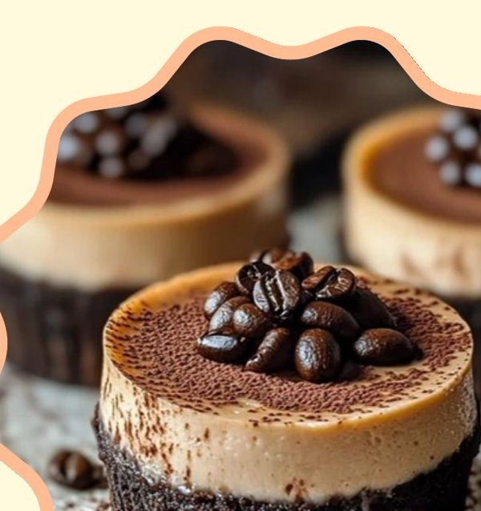
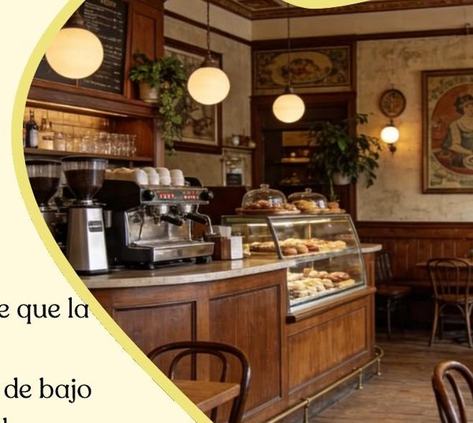

Donde las historias son dulces y eternas
Repostería de postres tradicionales colombianos. Cada postre lleva un dato curioso sobre Colombia, para que descubras un poquito del país en cada bocado.


Lulo, maracuyá y café: sabores 100 % colombianos
Nuestro eslogan
Un pedacito de la cultura colombiana en cada postre. Mira cómo nacen las historias que endulzan Macondo Kogui.
¿Tienes una petición, queja, reclamo o solicitud?
Tu opinión también hace parte de nuestra historia. Respondemos en máximo 10 días hábiles.
Servicios destacados
Lo que más nos piden nuestros clientes.
Postres tradicionales
Recetas colombianas con lulo, maracuyá y café, preparadas con ingredientes frescos y 100 % nacionales.
Domicilios
Pide por WhatsApp o redes sociales y recibe tu postre en Bogotá, empacado con cuidado para que llegue perfecto.
Momentos especiales
Postres para cumpleaños, reuniones familiares y celebraciones, con el dato curioso de Colombia que acompaña cada pedido.